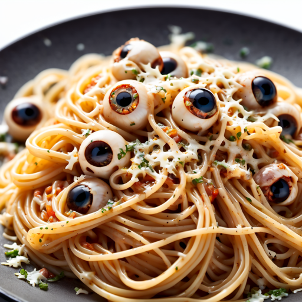

Spaghetti with bones and eyeballs
Ingredients:
- Spaghetti noodles (cooked al dente)
- Faux bone-shaped pasta (or pasta shaped like bones)
- Meatballs (for the "eyeballs")
- Black olives (for the "pupils" of the eyeballs)
- Marinara sauce (for the pasta and to create a creepy sauce)
- Mozzarella cheese (for the "eyeball whites")
- Fresh basil leaves (for a garnish, to resemble "eyelashes")
- Red food coloring (for the "blood" sauce, if desired)
- Edible food gel (for a creepy finish on the eyeballs)
How to make:
- Boil the Spaghetti:
- Fill a large pot with water and bring it to a boil.
- Add the spaghetti noodles and cook them until they're al dente, following the package instructions.
- Prepare the Bone Pasta:
- While the spaghetti is cooking, prepare the faux bone-shaped pasta in a separate pot according to the package instructions.
- Make Meatball Eyeballs:
- Form meatballs and cook them in a separate pan until they're browned and cooked through.
- Create Eyeballs:
- Slice black olives to create "pupils" and place them in the center of each meatball.
- Assemble the Eyeballs:
- In a baking dish, spread a layer of marinara sauce.
- Place the meatball eyeballs on top of the sauce.
- Make Eyeball Whites:
- Place thin slices of mozzarella cheese over the meatballs to create the "eyeball whites."
- Bake the Eyeballs:
- Bake the dish in the oven at 350°F (175°C) until the cheese is melted and bubbly.
- Garnish with "Eyelashes":
- After removing the dish from the oven, garnish with fresh basil leaves around the meatball eyeballs to resemble "eyelashes."
- Create the "Blood" Sauce (optional):
- In a separate bowl, mix a small amount of marinara sauce with red food coloring to create a "blood" sauce for a spooky effect.
- Serve Your Spooky Spaghetti:
- Plate the cooked spaghetti noodles alongside the meatball eyeballs.
- Drizzle the "blood" sauce (if using) on top for an extra eerie touch.
- Enhance the Eyeballs:
- You can use edible food gel to add creepy finishing touches to the eyeballs, such as veins or bloodshot effects.
- Enjoy the Spooky Meal:
- Serve and enjoy your creative and spooky "Spaghetti with Bones and Eyeballs" with friends and family for a fun and imaginative dining experience.